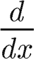
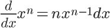
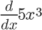
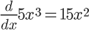
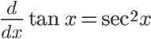
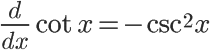
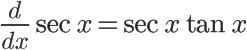
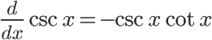

Solving Derivatives
Solving Normal Functions
A function to be derived will be preceded by
f'(x) is often read as "f-prime of x". The number of apostrophes after f indicates how many times the function has been, or should be, derived. For example, finding f''(x) requires deriving f(x) twice.
In general, to find the derivative of a function, we use its values in the equation
It's that simple! For example, to find the derivative of the function
We can use that general deriving equation with the function's values
To yield its derivative
Trig Functions
Trigonometry functions (sine, cosine, etc.) behave in their own way. In my experience, it's best to just memorize the behavior of each function as it is derived. Here are a few main points to remember:
- The derivative of a sine function is a cosine function with the same sign (positive or negative).
- The derivative of a cosine function is a sine function. However, the sign of the function will change from positive to negative or vice versa.
- When integrating a sine or cosine function, the behavior is swapped: integrating a sine function will change the function's sign, while integrating a cosine function will not.
- If you forget whether sine or cosine change the sign of the function, analyze how the slope changes in the function you derive!
The more complex trigonometry functions (tangent, secant, etc.) behave a little more strangely when derived. It's very handy to memorize these, since the process of breaking them down into sine and cosine before deriving can get messy. A good way to remember which trig functions change signs is to associate any function that has the prefix "co" with a sign change (cosine, cosecant, cotangent). Another tip that may help you remember these is that functions without "co", when derived, do not result in any formulas with "co". The same can be said for the opposite: deriving a "co" function results in other "co" trig functions.
   